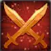
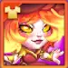

Mushy & Shroom turn healing into pressure. A mushroom that looks inactive can become another attacker, and every healing cycle can add damage to Rotting Seeds. That is why I build this Nature tank around a simple question: can the team keep the mushrooms alive long enough to activate?
In this guide, I explain which skills and upgrades I would fund first, when to switch talismans, and how to build a team that supports the summons. Start with survival and steady healing; then invest in the damage that rewards both.


Table of Contents
Who Is Mushy & Shroom in Hero Wars Alliance?

- Main Class: Tank
- Position: Front Line
- Main Stat: Intelligence
- Faction: Way of Nature
- Core partners: Alvanor and reliable healers
Perfect Copy creates additional Shrooms that start inactive. Healing them to full health activates their attacks and learned skills. Spore Mushrooms also need healing before they rush forward and explode. Your healing support therefore controls how quickly the board fills with active threats.
The important limitation is timing: summoned Shrooms cannot gain energy, and their stats are copied from the start of battle. Do not expect an inactive summon to attack immediately.
Mushy & Shroom — Talisman Max Stats Comparison
Both columns use level 120, six stars, Orange +4 with all items, level 60 skins including Lunar Skin+ and Crimson Grove Skin+, level 80 glyphs, level 100 six-star artifacts, level 30 Gift of the Elements, and the level 30 Legendary Relic. Each talisman is level 50 with maximum rerolls. Collection bonuses and Realm research settings are unspecified; the weapon’s temporary team buff is not included.
| Stat |
Talisman of Mycelium |
Talisman of Fungi |
|---|---|---|
| 16,794 | 14,794 | |
| 3,623 | 3,623 | |
| 4,088 | 4,088 | |
| 1,434,029 | 1,434,029 | |
| 36,143 | 34,143 | |
| 158,938 | 152,938 | |
| 75,986 | 52,226 | |
| 57,637 | 55,637 | |
| 10,650 | 10,650 | |
| 0 | 4,600 | |
| 4,376 | 12,626 | |
 Power | 298,185 | 303,935 |
Crimson Grove Skin+ contributes +213,290 Health in total, including the base skin’s +106,645; the two values are not added together. Both talismans have the same maximum Health in this comparison. The weapon’s Armor buff remains a temporary team effect.
Mushy & Shroom Talisman Guide
My recommendation: use the 1st talisman, Talisman of Mycelium, for PvP; use the 2nd talisman, Talisman of Fungi, for PvE. Mycelium combines Intelligence and Armor, while Fungi combines Magic Crit Hit Chance and Toughness.
Only the equipped talisman supplies its bonuses. Skins work differently: their unlocked stat bonuses remain active regardless of the appearance you display. For rerolls, judge the combined total across all three slots.
1 — Talisman of Mycelium

| Main stat | Combined reroll bonus |
|---|---|
| Intelligence +2,000 | Armor +23,760 |
Mycelium is my recommended talisman for PvP, where its Intelligence and Armor support Mushy against opposing hero teams. Its Intelligence adds 6,000 Magic Attack (2,000 × 3), 2,000 Magic Defense, and 2,000 Physical Attack. The combined +23,760 Armor helps against physical damage while Magic Attack raises the relevant skill formulas.
2 — Talisman of Fungi

| Main stat | Combined reroll bonus |
|---|---|
| Magic Crit Hit Chance +4,600 | Toughness +8,250 |
Fungi is my recommended talisman for PvE. It trades Intelligence and Armor for magical critical potential and low-health damage reduction. Its +4,600 Magic Crit Hit Chance improves the chance of magical critical hits; it is a rating, not a 4,600% chance. Toughness helps once Health falls below 50%, and its effectiveness depends on the attacker's main stat.
Alexandre Tips: Choose by game mode: Mycelium for PvP and Fungi for PvE. Mycelium supports the PvP frontline with Armor and Intelligence; Fungi is my PvE choice for Magic Crit Hit Chance and Toughness. Fungi does not raise the base formulas through Magic Attack, so a lower base skill value in the comparison does not change my recommendation by mode.
Mushy & Shroom Skills Upgrade Priority
Learn how Mushy & Shroom turn healing into active summons and damage, then use these skill priorities to build a steady, effective battle plan.
The calculations below use the maximum-build Health and Magic Attack shown in the comparison table, including the level 30 relic and Crimson Grove Skin+. All skill coefficients remain unchanged; different equipment, skins, talismans, or relic levels produce different displayed values.
1 — Perfect Copy
In-game description: Conjures an inactive Shroom with a portion of its health missing. The copy has the hero's stats from the battle’s start. It can be targeted by attacks, offensive spells, and healing spells.
When the Shroom’s health is fully replenished for the first time, it activates. After that, it can attack and use all skills learned by the hero, but it won't be able to replenish energy.
You can summon no more than 5 Shrooms.

Skill Explanation: A fully healed copy adds another active Shroom. Treat healing as the activation switch, not merely recovery after damage.
Formula with Talisman of Mycelium
- Starting Shroom health: 681,313.05 (45% × 1,434,029 Health + 300 × 120).
Formula with Talisman of Fungi
- Starting Shroom health: 681,313.05 (45% × 1,434,029 Health + 300 × 120).
Skill Animation Info
- Skill level: 120
- Animation delay: 1.2 seconds
Evolution Priority: Very High — More active copies strengthen the long-fight engine and add sources of pressure.
2 — Branching Mycelium
In-game description: Conjures mycelium with 3 inactive Spore Mushrooms with a portion of their health missing. They can be targeted by attacks, offensive spells, and healing spells. Their max health is 30% of the hero's health at the battle’s start.
Once the mushroom's health is fully replenished, it runs towards the enemies and explodes, dealing damage and spreading a Mushroom Spore cloud within a short range. The cloud silences those caught within its range for 4 seconds.
Nearby enemies not affected by Mushroom Spores yet are prioritized when selecting the target.

Skill Explanation: These three mushrooms provide delayed damage and Silence. A silenced enemy cannot use magical or pure-damage skills, non-damaging skills, or skills that scale with Magic Attack; physical attacks and eligible physical skills can continue.
How to read the formula: Starting health is 10% of Mushy’s Health, while a Spore Mushroom’s maximum health is 30% of Mushy’s Health at the start of battle. Explosion damage adds two terms: 10% Health and 25% Magic Attack + 70 × skill level. Starting health is a separate property, not a third damage term.
Level 120 example: With 935,800 Health and 113,860 Magic Attack, starting health is 93,580 (10% Health). Explosion damage is 93,580 (10% Health) + 36,865 (25% Magic Attack + 8,400), for a total of 130,445 before mitigation. The talisman calculations below use the fully developed build in the table above.
Formula with Talisman of Mycelium
- Spore Mushroom maximum health: 430,208.7 (30% × 1,434,029 Health).
- Starting health: 143,402.9 (10% × 1,434,029 Health).
- Explosion damage: 143,402.9 (10% × 1,434,029 Health) + 48,134.5 (25% × 158,938 Magic Attack + 70 × 120).
- Total explosion damage before mitigation: 191,537.4 (143,402.9 + 48,134.5).
Formula with Talisman of Fungi
- Spore Mushroom maximum health: 430,208.7 (30% × 1,434,029 Health).
- Starting health: 143,402.9 (10% × 1,434,029 Health).
- Explosion damage: 143,402.9 (10% × 1,434,029 Health) + 46,634.5 (25% × 152,938 Magic Attack + 70 × 120).
- Total explosion damage before mitigation: 190,037.4 (143,402.9 + 46,634.5).
Skill Animation Info
- Skill level: 120
- Initial cooldown: 3 seconds
- Cooldown: 12 seconds
- Animation delay: 0.88 seconds
- Silence duration: 4 seconds
- Area: 100
Evolution Priority: High — Damage plus Silence is valuable, but the mushrooms must first be healed to full health.
3 — Rotting Seeds
In-game description: Damages the nearest enemy. The damage is increased for each point of healing received by allies since this skill was last activated.

Skill Explanation: This is the clearest payoff for investing in sustained team healing. Its extra damage grows with healing received since the previous activation.
Formula with Talisman of Mycelium
- Base damage: 10% Health + 40% Magic Attack + 50 × 100 = 211,978.1 (143,402.9 + 63,575.2 + 5,000).
- Extra damage: 60% × allied healing since the previous activation (100,000 healing adds 60,000 damage).
Formula with Talisman of Fungi
- Base damage: 10% Health + 40% Magic Attack + 50 × 100 = 209,578.1 (143,402.9 + 61,175.2 + 5,000).
- Extra damage: 60% × allied healing since the previous activation (100,000 healing adds 60,000 damage).
Skill Animation Info
- Skill level: 100
- Cooldown: 10 seconds
- Animation delay: 1.5 seconds
Evolution Priority: Very High — It turns the healing your team already needs into direct damage against the nearest enemy.
4 — Wild Growth
In-game description: Passive skill. Mushy heals inactive Shrooms and Spore Mushrooms.
This effects stacks for every active Shroom on the battlefield.

Skill Explanation: Mushy helps inactive summons reach their activation threshold. Each active Shroom adds another stack of this healing effect.
Formula with Talisman of Mycelium
- Healing per second, per stack: 1% Health + 4% Magic Attack + 10 × 80 = 21,497.81 (14,340.29 + 6,357.52 + 800).
Formula with Talisman of Fungi
- Healing per second, per stack: 1% Health + 4% Magic Attack + 10 × 80 = 21,257.81 (14,340.29 + 6,117.52 + 800).
Skill Animation Info
- Skill level: 80
- Healing interval: 1 second
Evolution Priority: Very High — It supports both copy activation and Spore Mushroom launches, connecting the rest of the kit.
Mushy & Shroom Legendary Relic Skills
The Legendary Relic unlocks Voracious Spores at level 1, enhances Perfect Copy at level 10 and Wild Growth at level 20, then adds Mycelial Echo at level 30. The order below follows these four unlocks.
At relic level 30, Mushy gains +430,848 Health and +28,667 Magic Attack from the relic in total. These are the total bonuses supplied by the relic.
Legendary Relic Stat Bonuses
| Relic Level | Skill Unlocked | ||
|---|---|---|---|
| 1 | +42,658 | +2,838 | Voracious Spores |
| 10 | +80,632 | +5,270 | Perfect Copy |
| 20 | +226,204 | +14,495 | Wild Growth |
| 30 | +430,848 | +28,667 | Mycelial Echo |
Each row shows the total relic bonus at that level. Use the row for your current relic level; do not add the rows together. For example, level 10 grants +80,632 Health and +5,270 Magic Attack in total.
Relic Shard Costs
| Relic Level | ||
|---|---|---|
| 1 | 50 | 50 |
| 10 | 280 | 330 |
| 20 | 800 | 1,130 |
| 30 | 1,750 | 2,880 |
The costs in the middle column cover the interval from the previous milestone. For example, going from level 20 to 30 needs 1,750 more shards, bringing the full level 0–30 cost to 2,880. This is not the price of upgrading level 29 to 30 alone.
Relic formulas: apply each skill multiplier to the relevant battle stats. The relic bonus table shows total bonuses at each level; do not add its rows together.
Relic Level 1 — Voracious Spores (New Skill)
Skill description: Starting 5 seconds into battle and every 12 seconds afterward, damages the enemy with the highest maximum health and steals maximum health equal to 50% of the damage dealt.

Skill Explanation: Voracious Spores targets the enemy with the highest maximum Health, rather than the enemy with the most Health remaining. Its maximum-Health steal equals half the damage actually dealt; it does not remove half of the target’s maximum Health in one hit.
- Damage formula: 150% Magic Attack.
- Maximum Health stolen: 50% of damage actually dealt.
- First activation: 5 seconds into battle.
- Repeat interval: 12 seconds.
Alexandre’s Tests: In my test with Eva, Guus, Crow, Byrna, and Mushy against Julius, Crow, Polaris, Peech, and Miu, the team lost without Mushy’s relic. After unlocking level 1, it won every battle I played in that test. This was a result for that matchup, not a guarantee against every team.
Relic Unlocks at Level 1 Info
| Info | Value |
|---|---|
| Additional Relic Shards from Previous Milestone |

50
|
| Cumulative Relic Shards from Level 0 |
50
|
| Total Health Bonus at Level 1 |

+42,658
|
| Total Magic Attack Bonus at Level 1 |

+2,838
|
Relic Level 10 — Perfect Copy Enhancement
Skill description: Shrooms receive the relic when they activate and begin using Voracious Spores 5 seconds later.

Skill Explanation: Active Shrooms become additional sources of Voracious Spores. A copy still needs to be healed to full Health to activate, then waits five seconds before starting its relic attacks. This upgrade does not give copies energy generation.
- Upgrade: Perfect Copy, the first base skill.
- Relic transfer: When a Shroom activates.
- Voracious Spores begins: 5 seconds after that activation.
- Energy: Copies still cannot gain energy.
Alexandre’s Tests: After testing other opponents, including teams with Satori and Leonel, I moved from level 1 to level 10. Mushy became more offensive, could tank more, and did well without a second tank. Teams with Mojo also gave good results.
Relic Unlocks at Level 10 Info
| Info | Value |
|---|---|
| Additional Relic Shards from Previous Milestone |
280
|
| Cumulative Relic Shards from Level 0 |
330
|
| Total Health Bonus at Level 10 |
+80,632
|
| Total Magic Attack Bonus at Level 10 |
+5,270
|
Relic Level 20 — Wild Growth Enhancement
Skill description: Whenever Mushy or an active Shroom receives healing, their magic penetration increases for 4 seconds. This effect stacks for each active Shroom on the battlefield.

Skill Explanation: Healing now supplies a four-second Magic Penetration bonus as well as recovery. The effect stacks for active Shrooms, linking sustained healing and a growing summon army with better access through enemy Magic Defense.
- Upgrade: Wild Growth, the fourth base skill.
- Trigger: Mushy or an active Shroom receives healing.
- Magic Penetration bonus formula: 10% Magic Attack.
- Duration: 4 seconds; stacks for active Shrooms.
Alexandre’s Tests: Miu, Guus, Crow, Byrna, and Mushy worked very well at level 20. Mushy held the front, benefited from Miu’s buff, and dealt more damage. I also had good results alongside Leonel and Mojo.
Relic Unlocks at Level 20 Info
| Info | Value |
|---|---|
| Additional Relic Shards from Previous Milestone |
800
|
| Cumulative Relic Shards from Level 0 |
1,130
|
| Total Health Bonus at Level 20 |
+226,204
|
| Total Magic Attack Bonus at Level 20 |
+14,495
|
Relic Level 30 — Mycelial Echo (New Skill)
Skill description: Whenever an enemy is healed, Mushy and all Shrooms, including inactive Shrooms, copy 50% of that healing onto themselves. Healing copied by an equivalent ability does not trigger this effect.

Skill Explanation: Mushy and every Shroom, including inactive copies, receive 50% of a qualifying enemy heal. This can help inactive copies activate, and copied healing also triggers the level 20 Wild Growth enhancement. Healing copied by an equivalent ability does not create another copy trigger.
- Healing copied: 50% of qualifying enemy healing.
- Recipients: Mushy and all Shrooms, including inactive ones.
- Example: An enemy heal of 100,000 supplies a healing copy of 50,000 to each recipient, subject to its missing Health.
- Interaction: Copied healing triggers the level 20 Wild Growth enhancement.
- Excluded trigger: Healing copied by an equivalent ability.
Alexandre’s Tests: At level 30, Mushy tanked much more and worked better in varied Arena teams. I also saw more damage against Hydras and better results in Realm PvE and PvP, even without Realm skills.
Relic Unlocks at Level 30 Info
| Info | Value |
|---|---|
| Additional Relic Shards from Previous Milestone |
1,750
|
| Cumulative Relic Shards from Level 0 |
2,880
|
| Total Health Bonus at Level 30 |
+430,848
|
| Total Magic Attack Bonus at Level 30 |
+28,667
|
My relic investment priority: level 1 is the first unlock to consider when you use Mushy, and level 10 is my budget target based on the improved offense and tanking I observed. Levels 20 and 30 make more sense for a developed Mushy used regularly across several modes. The final interval costs 1,750 shards by itself, so I would compare it with other account priorities.
▶️Video: I Tested Mushy's Relic at Every Level - Is It Worth It?

Best Skins for Mushy & Shroom
Choose Mushy & Shroom skins by their impact on survival, healing, and damage. Keep their display order while following my upgrade priorities below.
Default skin
Level 60 bonus: Intelligence +1,365.
Intelligence supports damage, passive healing, and magical durability. At +1,365 Intelligence, it grants +4,095 Magic Attack, +1,365 Magic Defense, and +1,365 Physical Attack.
Skin stones: 30,825.
Evolution Priority: High — Intelligence supports damage, passive healing, and magical durability.
Spring Skin
Level 60 bonus: Magic Defense +10,650.
Useful against magical pressure. Upgrade it earlier if magic damage is the reason your frontline collapses.
Skin stones: 55,410 total (5,000 purchase + 50,410 upgrades).
Evolution Priority: Medium — Useful against magical pressure.
Lunar Skin+
Level 60 bonus: Magic Attack +10,650; Skin+ total: +21,300.
Magic Attack improves Rotting Seeds, explosions, and passive healing. The base skin gives +10,650; owning Skin+ doubles that to +21,300.
Skin stones: 55,410 total (5,000 purchase + 50,410 upgrades). Skin+ unlock is separate; the skin-stone leveling cost stays the same.
Evolution Priority: Very High — Magic Attack improves Rotting Seeds, explosions, and passive healing.
Demonic Skin
Level 60 bonus: Armor +10,650.
Armor gives the frontline more time to reach its first healing cycles against physical attackers.
Skin stones: 55,410 total (5,000 purchase + 50,410 upgrades).
Evolution Priority: High — Armor gives the frontline more time to reach its first healing cycles against physical attackers..
Angel Skin
Level 60 bonus: Health +106,645.
Health improves survival and the Health-based parts of summons, damage, and healing. Keep enough healing available to fill the larger health pools.
Skin stones: 55,410 total (5,000 purchase + 50,410 upgrades).
Evolution Priority: Very High — Health supports several parts of the kit at once.
Cybernetic Skin
Level 60 bonus: Armor +10,650.
This is another permanent Armor bonus. Upgrade it for the same physical-survival reason as Demonic Skin.
Skin stones: 55,410 total (5,000 purchase + 50,410 upgrades).
Evolution Priority: High — This is another permanent Armor bonus.
Tribal Skin
Level 60 bonus: Magic Penetration +10,650.
Magic Penetration helps magical damage pass through enemy Magic Defense. It does not increase healing or the health of summons.
Skin stones: 55,410 total (5,000 purchase + 50,410 upgrades).
Evolution Priority: Medium-High — Magic Penetration helps magical damage pass through enemy Magic Defense.

Crimson Grove Skin+
Level 60 base bonus: Health +106,645.
Level 60 Skin+ total: Health +213,290. Activating Skin+ adds another +106,645 to the base bonus; it does not add +213,290 on top of the base skin.
The full Skin+ bonus improves personal survival and the Health-based parts of Perfect Copy, Branching Mycelium, Rotting Seeds, and Wild Growth. Relative to having no Crimson Grove skin, +213,290 Health adds +95,980.5 starting health to a Perfect Copy, +63,987 maximum health to a Spore Mushroom, +21,329 to its starting health and the Health-based explosion term, +21,329 to Rotting Seeds’ base damage, and +2,132.9 healing per second per Wild Growth stack, before other battle effects.
Skin stones: 55,410 total (5,000 purchase + 50,410 upgrades). Skin+ unlock is separate; the skin-stone leveling cost stays the same.
Evolution Priority: Very High — My first Health skin when Skin+ is available: its doubled bonus supports survival, summon health, damage, and healing together. Pair it with Lunar Skin+ for Magic Attack, while keeping enough healing to activate the larger summons. Bring Armor forward if physical burst kills Mushy before the healing cycle begins.
Alexandre Tips: I would start with Crimson Grove Skin+ and Lunar Skin+, then Angel Skin for another Health bonus while stabilizing Armor and Intelligence. The base Crimson Grove skin still grants +106,645 Health without Skin+. If Mushy dies before summons activate, move Armor ahead of further offensive investment. All unlocked skin bonuses stack, but each Skin+ value replaces its own base value rather than stacking on top of it.
Mushy & Shroom Artifact Evolution Priority
Compare Mushy & Shroom artifact priorities through permanent Health, Magic Attack, Intelligence, and team Armor to spend resources with a plan.
 - Hero Wars Alliance")
1 — Wand of Growth (Weapon)
Perfect Copy can trigger the weapon's +32,040 team Armor buff for 9 seconds, with 100% activation chance at six stars. It protects the team during the setup window.
Evolution Priority: High — Team Armor buys time for healing and summons.
 - Hero Wars Alliance")
2 — Tome of Arcane Knowledge (Book)
The book adds +53,394 Health and +10,680 Magic Attack permanently. Both stats support the skill formulas, making this my first artifact investment.
Evolution Priority: Very High — Permanent Health and Magic Attack improve several parts of the kit together.
 - Hero Wars Alliance")
3 — Ring of Intelligence (Ring)
The ring adds +3,990 Intelligence: +11,970 Magic Attack, +3,990 Magic Defense, and +3,990 Physical Attack. It strengthens the magical side of the build without replacing the book's Health.
Evolution Priority: High — Intelligence increases Magic Attack and Magic Defense.

Mushy & Shroom Glyph Evolution Priority
Build Mushy & Shroom glyphs around Health, Magic Attack, and Intelligence, then adjust Armor and Magic Defense to keep your frontline alive longer.
1 — Magic Attack
Level 80 Stats: +12,850 Magic Attack.
Magic Attack raises damage and Wild Growth healing.
Evolution Priority: High — Magic Attack raises damage and Wild Growth healing.
2 — Health
Level 80 Stats: +122,800 Health.
Health supports survival and the Health-based skill formulas.
Evolution Priority: Very High — Health supports survival and the Health-based skill formulas.

3 — Armor
Level 80 Stats: +12,850 Armor.
Armor helps the frontline survive physical pressure.
Evolution Priority: High — Armor helps the frontline survive physical pressure.

4 — Magic Defense
Level 80 Stats: +12,850 Magic Defense.
Magic Defense improves survival against magical damage; raise its priority for those matchups.
Evolution Priority: Medium — Magic Defense improves survival against magical damage; raise its priority for those matchups.

5 — Intelligence
Level 80 Stats: +2,110 Intelligence.
Intelligence adds +6,330 Magic Attack, +2,110 Magic Defense, and +2,110 Physical Attack at level 80.
Evolution Priority: High — Intelligence adds +6,330 Magic Attack, +2,110 Magic Defense, and +2,110 Physical Attack at level 80.
How to Counter Mushy & Shroom
Interrupt the healing-and-activation cycle before the copies build momentum. These are matchup tools, not guaranteed wins against every lineup.

Cursed Flame prevents affected targets from being healed, and Limbo converts blocked healing into magic damage. Denying healing delays inactive mushrooms from reaching full health and weakens the team's healing-driven pressure.

Paralysis targets the enemy with the highest Magic Attack. When that is Mushy, the control interrupts the main hero's actions; Dreaded Shadow and Bonds of Darkness add targeted pressure. Check the Magic Attack of the entire enemy team before choosing him.

Rakashi's Barrier absorbs magical and pure damage, interfering with magical pressure. Rakashi's Oath prevents magic or pure damage from finishing him while his starting allies remain alive. Bring physical finishing damage or address his allies first.
Mushy & Shroom Synergies
I look for sustained healing first, then protection or another damage dealer. The following partners are listed alphabetically.

Fire Embrace supplies healing, while Flame Shield can protect a vulnerable ally. Healing received contributes to Rotting Seeds. Account for the health sacrifices in his kit when checking whether your team survives the opening.

Rune of Life heals the team and doubles healing effectiveness for allied Nature heroes while active. Rune of Earth permanently protects Nature allies against basic attacks. That combination supports Mushy's survival and healing plan.

Queen of Flowers supplies recurring team healing while the flower survives. Those healing cycles help the team sustain pressure and contribute to Rotting Seeds. Protect the flower and allow time for the engine to build.

Xe'Sha adds magical damage and a Magic Attack buff. Her allied health sacrifices create healing demand, but lost health is not itself healing: your healer must restore it before it can contribute to Mushy's healing-based damage.
Mushy & Shroom: My Tested Teams
These lineups come from my tests with Mushy. The first two have recorded Arena results with Mushy's relic at level 30; the third is an initial Chaos matchup with more Arena testing planned. The talismans used are shown in each table.
Team 1 — Eva, Guus, Crow, Mushy and Julius
This is one of the lineups that gave me good Arena results after developing Mushy's relic. I used Eva with Talisman 1, Guus with Talisman 2, Crow with Talisman 1, Mushy with Talisman 1, and Julius with Talisman 2.
|
|
|
|
|
|

Eva |

Guus |

Crow |
Mushy & Shroom |

Julius |
Alexandre's Tests: At relic level 30, Mushy could tank much more and worked better in varied Arena teams. This Eva, Guus, Crow, Mushy, and Julius lineup was one of the combinations that did well on my account.
Team 2 — Guus, Byrna, Tristan, Mushy and Luther
I tested this lineup against the Chaos team of Cleaver, Byrna, Dorian, Kendle, and Aidan. I used Guus with Talisman 1, Byrna with Talisman 2, Tristan with Talisman 1, Mushy with Talisman 1, and Luther with Talisman 1.
|
|
|
|
|
|
|
Guus |

Byrna |

Tristan |
Mushy & Shroom |

Luther |
Alexandre's Tests: This team won Arena matchups with a power gap of more than 150,000, including opponents using a level 30 Legendary Relic. It also beat the Chaos lineup with Cleaver, Electra, Byrna, Dorian, and Kendle, which I had previously only beaten using Eva.
Team 3 — Guus, Byrna, Yasmine, Mushy and Electra
I tested this lineup against a Chaos team with 140,000 more power. My first impression was that the team was amazing. I plan to run more Arena tests to explore it further.
|
|
|
|
|
|
|
Guus |
Byrna |

Yasmine |
Mushy & Shroom |

Electra |
Alexandre's Tests: This is an encouraging initial result against a higher-power Chaos team. More Arena testing is planned.
Most Popular Teams for Mushy & Shroom Hero Wars Alliance
- Polaris, Orion, Morrigan, Mushy, Corvus
- Aidan, Polaris, Xe'sha, Tempus, Mushy
- Orion, Mojo, Alvanor, Mushy, Aurora
- Martha, Aidan, Xe'sha, Mushy, Astaroth
- Dark Star, Mojo, Alvanor, Mushy, Aurora
- Orion, Mojo, Alvanor, Mushy, Astaroth
- Orion, Mojo, Alvanor, Mushy, Andvari
Mushy & Shroom vs. Hydra: What I Test First
The appeal in Hydra battles is sustained damage: healing keeps the team working and feeds Rotting Seeds while summons develop. I test a healing-heavy lineup first, then compare damage and survival against the same head.
- Check whether copies activate early enough to contribute.
- Keep healers alive for repeated healing cycles.
- Start with Talisman of Fungi, my PvE recommendation, and compare results against the same Hydra head with similar conditions.
- Do not assume a fixed damage total or a one-battle kill from the team alone.
See the Hydra best teams guide for additional lineup ideas.
Alexandre's Final Verdict
I would build Mushy & Shroom when I already have dependable healing support. Start with Health, keep the frontline stable, and strengthen the Magic Attack that improves healing and damage. My talisman recommendation follows the game mode: Mycelium for PvP, with Intelligence and Armor; Fungi for PvE, with Magic Crit Hit Chance and Toughness.
The battle I want to see is simple: inactive mushrooms fill up, copies start attacking, and repeated healing becomes damage. If that sequence is not happening, fix the healing and survival before spending on the next offensive upgrade.